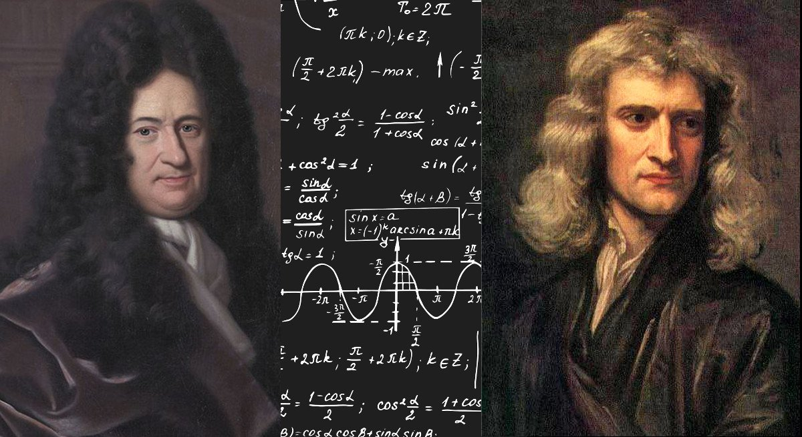
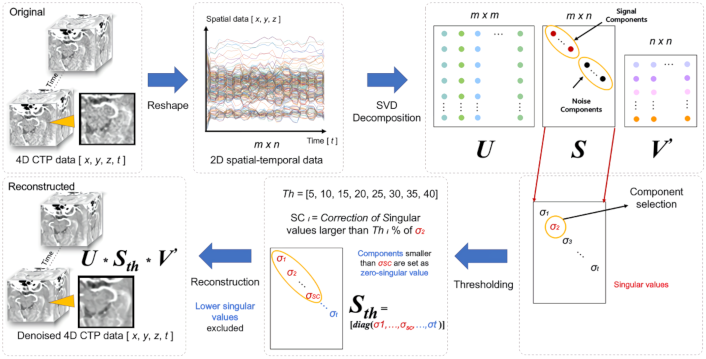

Lasted Updated: September 20, 2021
A mathematics graduate student at Southern Methodist University with an interest
in mathematical and quantum computation. I possess a B.S. in Mathematics (with departmental distinction) and
a B.A. in Economics (with departmental distinction), both degrees are from Southern Methodist University.
I conducted research in Von Neumann-Morgenstern Portfolio Theory as a undergraduate at Southern Methodist University
and was able to develop several algorithms to attain analytical solutions to two risky assets portfolios, and many
risky assets portfolio, and several other contributions. My contribution to VNM Portfolio Theory and Risk and Uncertainty,
are being taught at SMU in ECO 5340: Decision Making Under Uncertainty by Dr. Jorge Ibarra-Salazar. ...
 Last Updated: December 27, 2021
Last Updated: December 27, 2021

A final presentation on Gröbner Bases and Macaulay Matrices in Isabelle/HOL by Alexander Maletzky.
Last Updated: December 27, 2021

Final Presentation on the famous Arrow-Pratt Risk Aversion measurement. This topic was closely align to my undergraduate research in Von Neumann-morganstern Portfolio Theory, in fact this presentation covered many of the underlying topics that formed the foundation for VNM Portfolio Theory.
Last Updated: September 20, 2021
Here one can find my Jupyter notebook for MATH 6391: Computational Algebraic Geomerty, it contains many excepts from the book, but also resources outside the Ideals, Varities, and Algorithm. Though I also provided algorithms written in Python in the notebook.
Last Updated: September 20, 2021

Here one can find my Jupyter notebook for MATH 6391: Real Analysis: the notebook contains many excepts from the textbook, A First Course in Real Analysis, alongside my own commentary, remarks, proofs and homework assignments.
Last Updated: September 6, 2021

In MATH 6316 our second project was about deriving and coding our own BLAS QR decomposition algorithms. We utilised both Gram-Schmidt and Householder processes to derive these QR decomposition algorithms.
We coded the resulting algorithms in MATLAB, so that we could utilize them in solving the assigned textbook problems.
To be neat I coded the QR by Gram-Schmidt and QR by Householder algorithms in MATLAB, and the respcetive textbooks. I imported the MATLAB matrices and vectors into R Markdown, and
devloped a R markdown webpage.
Lasted Updated: September 6, 2021

Here one can find my Jupyter notebook for STAT 6311: Mathematical Statistics, it will contain course notes alongside accompanying commentary.
Last Updated: September 6, 2021

Currently in the process of rewriting this working publication in Jupyter Notebook. I hope to have it completed in due time.
Last Updated: September 6, 2021

Currently in the process of rewriting this working publication in Jupyter Notebook. I hope to have it completed in due time.